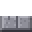
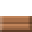

Fishing guide
Hold a rod and tap near water to cast. When the bobber dips and a ! appears, tap again quickly. Better rods bite faster, give you longer to react, catch rarer things and pull up less junk. Ocean, fresh water and cave water each hold different catches.
| Catch | Rod tier | Where | Chance weight | Sells | |
|---|---|---|---|---|---|
 | Raw fish | 1+ | Anywhere | 40 | 3c |
 | Salmon | 1+ | Ocean or fresh | 16 | 6c |
 | Trout | 1+ | Fresh water | 20 | 4c |
 | Bass | 2+ | Fresh water | 14 | 4c |
 | Cod | 2+ | Ocean | 16 | 4c |
 | Pufferfish | 2+ | Ocean | 8 | 3c |
 | Tuna | 3+ | Ocean | 10 | 6c |
 | Anglerfish | 3+ | Cave water | 14 | 5c |
 | Swordfish | 4+ | Ocean | 5 | 8c |
| Golden fish | 4+ | Anywhere | 2 | 60c | |
 | Seaweed | 1+ | Ocean or fresh | 6 | - |
 | Coral | 1+ | Ocean | 5 | 8c |
 | Message in a bottle | 1+ | Ocean | 3 | - |
 | Pearl | 2+ | Ocean | 4 | 25c |
 | Ancient coin | 2+ | Anywhere | 3 | 40c |
 | Old compass | 2+ | Anywhere | 2 | 60c |
 | Jewel box | 3+ | Anywhere | 2 | - |
 | Sealed chest | 3+ | Anywhere | 2 | - |
| Kraken ink | 4+ | Ocean | 1.5 | 70c | |
 | Black pearl | 4+ | Ocean | 1.5 | 90c |
 | Sunken crown | 4+ | Anywhere | 0.8 | 150c |
| Old boot | 1+ | Anywhere | 7 | 1c | |
 | Tin can | 1+ | Anywhere | 6 | 1c |
 | Rusty chain | 1+ | Anywhere | 4 | 1c |
 | Soggy paper | 1+ | Anywhere | 4 | - |
 | Broken bottle | 1+ | Anywhere | 4 | - |
 | Sea glass | 2+ | Ocean | 5 | 12c |
 | Conch shell | 2+ | Ocean | 4 | 22c |
 | Reef shark | 3+ | Ocean | 4 | 25c |
 | Great white shark | 4+ | Ocean | 1.2 | 180c |
 | Nautilus shell | 4+ | Ocean | 1 | 160c |